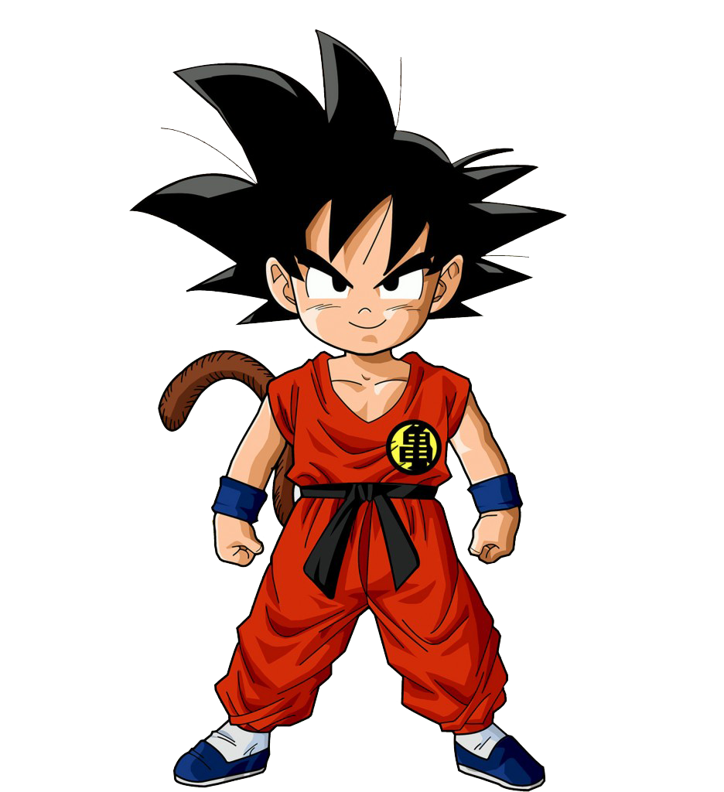

HISTÓRIA
Originalmente batizado como Kakarotto (カカロット), Goku é membro de uma raça
fictícia
de extraterrestres, os
Saiyajins. Logo após seu nascimento, Goku é enviado à Terra, para destruir as formas de vida locais e
preparar o planeta para venda no mercado intergalático. Graças a uma pancada na cabeça que lhe causa
amnésia, Goku esquece sua missão e passa a ter como objetivo se tornar mais forte, simplesmente pelo
prazer
da tarefa. No início da série, Goku conhece uma adolescente extremamente inteligente chamada Bulma, o
ladrão
Yamcha e duas criaturas transmorfas, Oolong e Pual. Também encontra quem viria a ser seu melhor amigo,
Kuririn, enfrenta a Red Ribbon, o temível Tao Pai Pai e outros guerreiros durante seu treinamento. Ao
participar de diversos torneios de artes marciais, Goku também enfrenta seus futuros aliados Tenshinhan
e
Chaos, assim como Piccolo.
